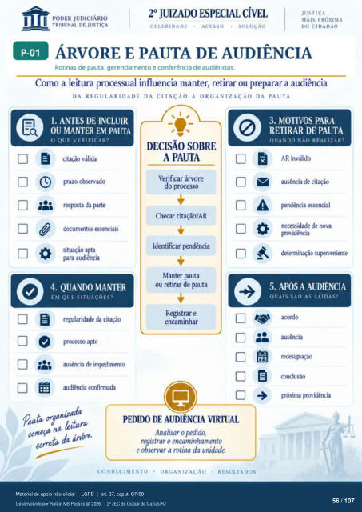

Transcrição automática em português, ainda não revisada. Confira grafia, prazos e termos jurídicos na imagem e no PDF antes de utilizar.
ÁRVORE E PAUTA DE AUDIÊNCIA
Rotinas de pauta. gerenciamento e conferência de audiências. Como a leitura processual influencia manter, retirar ou preparar a audiência
DA REGULARIDADE DA CITAÇÃO À ORGANIZAÇÃO DA PAUTA
1. ANTES DE INCLUIR
OU MANTER EM PAUTA
O QUE VERIFICAR'
citação válida prazo observado
respsta da parte dcxumentos essenciais
situação aÑa pra audiência
4. QUANDO MANTER
EM QUE SITUAÇOES?
regularidade da citação prcx•esso apto
de audiência confirmada
DECISÃO SOBRE
A PAUTA
Verificar árvore do proceso
Checar citação/AR Identificar pendência
Manter pauta ou retirar de puta
Registrar e encaminhar
correta da árvore.
PEDIDO DE AUDIÊNCIA VIRTUAL
Analisar o pedido, registrar o encaminhamento
e observar a rotina da unidade.
ORGANIZAÇÃO RESULTA DOS
CONHECIMENTO
3. MOTIVOS PARA
RETIRAR DE PAUTA
QUANDO \ Ao REAI
AR inválido ausência de citação
Fndência essencial necessidade de nova
providência determinação suprveniente
5. APÓS A AUDIÊNCIA
QUAIS SÃO AS SAÍDAS?
ausência redesignação
conclusão próxima providência
Ver também o infográfico original (página 56)
